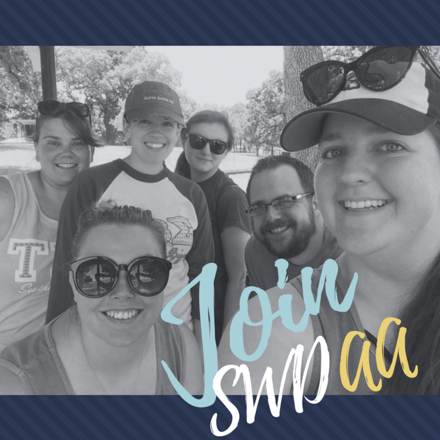

Membership

Thank you so much for your interest in SWDAA! The Southwest District Alumni Association is an alumni joint affiliate that allows you to network with your brothers and sisters within the district. Along with our Instagram and Facebook group, we host occasional regional events, work with committees and are looking for new ways to serve our vast growing membership. We would love for you to be a part of our organization! If you would like to join/renew your membership, please select the button below to be taken to the online membership form.
Please note, to be eligible for SWDAA membership, applicants MUST be an Alumni of the Southwest District of Kappa Kappa Psi and Tau Beta Sigma OR an Alumni of Kappa Kappa Psi/Tau Beta Sigma and reside in the Southwest District.
Sisters of Tau Beta Sigma are required to be members of TBSAA in order to be eligible for membership in SWDAA. Brothers are requried to be members of KKPsiAA to be eligible for membership in SWDAA.
Want to become a member of your National Alumni Association? Follow these links to learn more: Kappa Kappa Psi Alumni Association or Tau Beta Sigma Alumni Association
Follow the Steps below to Join SWDAA!
Step One:
 Click on the image to the left to access the SWDAA membership form
Click on the image to the left to access the SWDAA membership form
Step Two:
 Starting in 2018, SWDAA members (both new and renewing) must make an annual financial contribution (minimum $10, no maximum). Your contribution makes special programming possible while maintaining a stable financial footing for the organization. Help us continue the legacy! Click the image to the left to donate
Starting in 2018, SWDAA members (both new and renewing) must make an annual financial contribution (minimum $10, no maximum). Your contribution makes special programming possible while maintaining a stable financial footing for the organization. Help us continue the legacy! Click the image to the left to donate